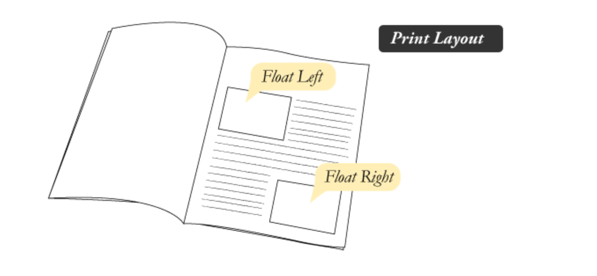

컨텐츠
1. Flexbox
우리가 흔히 사용하는 float은 애초에 레이아웃 구성을 위해 만든 속성이 아닙니다. —> 레이아웃에 적합하지 않죠
그냥 요런 모습의 문서를 만들고 싶어서 만든 요소였습니다. 그래서 그 대안으로 나온것이 바로 유연한 레이아웃을 구성하기 위한 CSS속성 Flexbox!
Flexbox 사용법
-
display: flex
flexbox를 사용할 때는 부모에 'display: flex;'를 선언합니다.
main{ display: -webkit-box; //중간에 문법이 바뀌어서 비슷하게 보이는게 있습니다. display: -moz-box; display: -ms-flex; display: -webkit-flex; //중간에 문법이 바뀌어서 비슷하게 보이는게 있습니다. display: flex; } —> 최신 기술이라 벤더 프리픽스는 필수! IE는 10부터 지원합니다... -
flex-wrap
flex-wrap은 부모가 자식요소들을 어떻게 감싸게 될지 정합니다.
- flex-wrap: wrap --> 자식요소들의 넓이가 부모보다 크면 줄바꿈을 합니다.
- flex-wrap: nowrap --> 기본 값입니다. 자식요소들의 넓이가 부모 보다 크면 스크롤바를 발생시키며 줄바꿈을 하지 않고 계속 나열합니다.
앞서 배운 white-space와 동일한 역할을 한다고 보시면 됩니다.
-
flex-flow
flex-flow는 자식요소들을 배열하는 흐름을 결정합니다.
- flex-flow: row --> 기본값입니다. 가로 레이아웃입니다.
- flex-flow: row-reverse --> 가로로 순서를 역전합니다.
- flex-flow: column --> 세로 레이아웃으로 만듭니다.
- flex-flow: column-reverse --> 세로로 순서를 역전합니다.
-
flex
자식요소에는 ‘flex’ 를 선언합니다.
.flex-child{ -webket-box-flex: 1; -moz-box-flex: 1; -ms-flex: 1; -webket-flex: 1; flex: 1; } —> 이렇게 클래스를 만들어 자식요소에 넣어주면 자식요소의 수 만큼 화면을 분할합니다! 뒤의 숫자는 비율을 뜻합니다. (1 = 1:1) -
order
자식요소들의 순서를 결정합니다.
.sub{ width: 150px; min-width: 150px; max-width: 150px; --> ** flexbox는 기본적으로 화면크기에 따라 늘어나거나 줄어들려는 성질이 있습니다. 그 성질을 막으려면 width, max-width, min-width를 전부 사용해서 크기를 고정할 수 있습니다. ** -webkit-box-ordinal-group: 1; -moz-box-ordinal-group: 1; -ms-flex-order: 1; -webkit-order: 1; order: 1; } —> order 뒤의 숫자에 따라 요소의 순서를 바꿔줄수 있습니다! 화면에서 보여지는 순서만 바꿉니다! flow를 해치지 않아요!
**What is the vendor prefix??**
CSS3는 아직 표준이 아닙니다. 개발사들이 먼저 지원해주고 있는 실정인데요..
- -webkit- : Safari, Chrome, 신형 Opera 지원
- -moz- : Firefox 지원
- -ms- : IE 시리즈 지원
- -o- : 구형 Opera 지원
즉, 아직 표준은 아니지만 브라우져에서 새로운 CSS의 기능을 선제적으로 적용하고 싶을 때 사용하는 문법입니다.
***flex-box는 PC브라우저는 무리! 모바일에서만(주의해서) 사용 가능합니다.*** 자세한 내용은 https://css-tricks.com/snippets/css/a-guide-to-flexbox/ 여기를 참고하세요!
2. Transition(IE10부터 지원)
: A와 B사이의 상태 변화에 애니메이션을 부여합니다.
div {
width: 100px;
height: 100px;
background: red;
-webkit-transition: width 2s cuvic-bezier(1, 0.49, 1, 1);
-moz-transition: width 2s cuvic-bezier(1, 0.49, 1, 1);
-0-transition: width 2s cuvic-bezier(1, 0.49, 1, 1);
-ms-transition: width 2s cuvic-bezier(1, 0.49, 1, 1);
transition: width 2s cuvic-bezier(1, 0.49, 1, 1);
}
--> s(시간) width(적용되길 원하는 속성) cuvic-bezier(1, 0.49, 1, 1)(베지에 곡선 값, 키워드도 가능)
자바스크립트로 넣는 애니메이션보다 CSS를 직접 이용하는 transition 애니메이션이 무조건 빠릅니다!! http://cubic-bezier.com/ : 베지에 곡선을 시험해 볼 수 있는 사이트입니다.
3. Animation(IE10부터 지원)
: A와 B사이의 상태 변화에 애니메이션을 부여합니다.
transition과의 차이
—> transition : A와 B가 바뀌는 사이를 애니메이션으로 바꿔주는 것. 상황이 바뀌는 과정을 애니메이션화 합니다. 반드시 발동 조건이 있습니다.(호버, 클릭 등등)
—> animation : 0~100% 까지의 프레임이 있고, 그 사이를 애니메이션화 할 수 있습니다.
.animation{
position:relative;
-webkit-animation: move 3s cubic-bezier(1, 0.49, 1, 1) infinite
--> 애니메이션 이름, 시간, 애니메이션 종류, 재생옵션
animation: move 3s
}
@-webkit-keyframes move{ —> move 애니메이션을 정의하는 부분입니다.
0%{
left: 0;
}
100%{
left:100%;
}
}
4. transform
형태를 변환해주기 위한 CSS속성입니다. 좌표변경, 회전, 틸트, 크기 조절이 가능합니다.
-
translate
: 원하는 x,y,z축으로 위치를 변경합니다. (position:relative와 같습니다.)
.class{ -webkit-transform: translate(50px,100px); -moz-transform: translate(50px,100px); -ms-transform: translate(50px,100px); -o-transform: translate(50px,100px); transform: translate(50px,100px); } -
rotate
: 원하는 각도로 회전합니다.
.class{ -webkit-transform: rotate(20deg); -moz-transform: rotate(20deg); -ms-transform: rotate(20deg); -o-transform: rotate(20deg); transform: rotate(20deg); } -
skew
: 원하는 각도로 기울입니다.
.class{ -webkit-transform:skew(10deg,10deg); -moz-transform:skew(10deg,10deg); -ms-transform:skew(10deg,10deg); -o-transform:skew(10deg,10deg); transform:skew(10deg,10deg); } -
scale
: 요소를 x, y축으로 늘려 원하는 크기로 만듭니다.
.class{ -webkit-transform:scale(1,4); -moz-transform:scale(1,4); -ms-transform:scale(1,4); -o-transform:scale(1,4); transform:scale(1,4); --> 값이 하나일 경우 x,y축으로 동일한 크기만큼 커집니다. }
**transform은 웹의 flow에 영향을 주지 않습니다. 레이아웃에 영향을 주지않고 애니메이션 효과를 줄때 유용합니다.**
미디어 쿼리
디바이스의 크기에 따라 CSS의 속성을 변화시킵니다.
@media(조건){
조건에 충족할 경우 적용시킬 CSS
}
디바이스 종류별 가로 사이즈
- 모바일 : 최대 가로사이즈 640
- 태블릿 : 최소 가로사이즈 678 ~ 1280
- 노트북 : 최소 가로사이즈 1280 ~
- 모니터 : 가로사이즈 1920 ~ 2560
@media(max-width: 640px){
모바일 사이즈
}
@media(min-width: 641px) and (max-width: 1280px){ —> ‘and’는 중복조건
태블릿 사이즈
}
@media(min-width: 1281px) and (max-width: 1920px){
노트북 사이즈
}
@media(min-width: 1921px) {
큰 모니터 사이즈
}
**미디어쿼리는 항상 CSS의 가장 마지막에 씁시다!!**
Webfont
폰트를 서버에 저장해서 유저가 사이트에 접속했을 때 폰트를 서버에서 불러옵니다. 유저가 어디서 접속하든 내가 원하는 폰트를 볼 수 있게 하는게 목적입니다.
- TTF(True Type font)
- OTF(Open Type font)
- WOFF(Web Open Font Format)
- EOT(Embedded Open Type)
...등등 브라우저마다 사용하는 폰트 포멧이 다르기 때문에 이 모든 폰트 파일을 전부 서버에 넣어야 합니다. 다운로드 속도가 좀 걸리는 단점이 있습니다.(한글 폰트의 경우 하나당 2MB정도 이고 이 정도면 이미지 파일을 20개 정도 받는 수준이기 때문입니다.)
이러한 단점들 때문에 직접 폰트 파일을 서버에 저장하기보다는 google early access 를 이용해 CDN 방식으로 폰트를 이용합니다.
https://www.google.com/fonts/earlyaccess여기서 선언을 찾고
@import url(http://fonts.googleapis.com/earlyaccess/alefhebrew.css);
이렇게 CSS파일에 선언합니다. 그리고 적용되길 원하는 요소에
font-family: 'Alef Hebrew', sans-serif;
이렇게 font-family를 이용해 적용합니다.